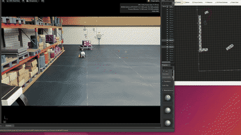

← 返回作品

Project
Isaac Sim 里的 Nav2
· BV1JTbe6qEMX

循环画面是封面的缓慢推移。简介只有一句话，写在下面。完整录像在 Bilibili。
问题
这条视频要展示的是自主导航：把导航算法放进仿真里跑。简介没有写机器人型号，也没有写地图。
方法
简介写的是：在英伟达的 Isaac Sim 里面部署 Nav2 导航算法。
结果
简介没有导航成功率、路径长度或其他数字。这个页面也不编。公开出来的结果就是那段录像。